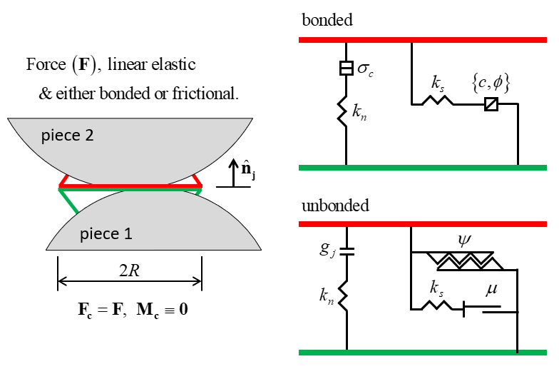
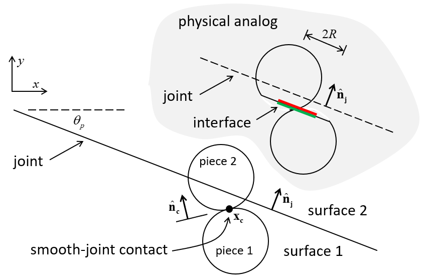
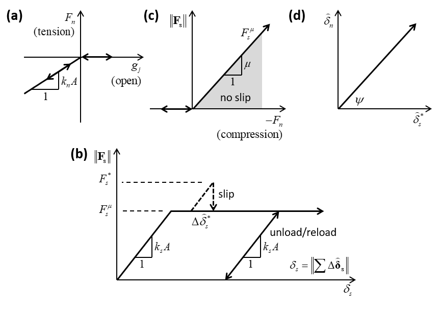
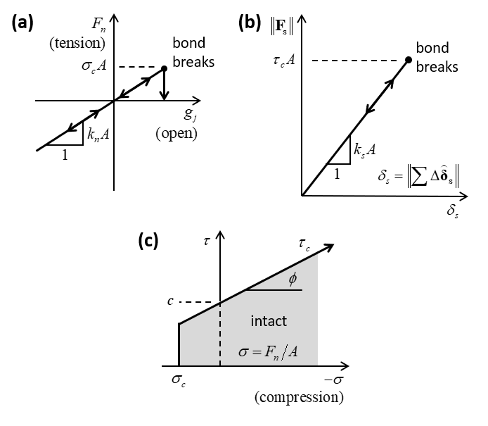

光滑节理模型
光滑节理模型可安装在球-球接触上，在命令和 FISH 中名称为 smoothjoint。
引言
光滑节理模型模拟具有剪胀的平面界面的行为，而不论界面附近局部颗粒接触方位如何。通过为位于节理两侧的颗粒之间的所有接触赋予光滑节理模型，可模拟摩擦或黏结节理的行为。
行为概要
光滑节理模型提供线弹性、且可为黏结或摩擦并带剪胀的界面的宏观行为（见 图 1（Figure 1））。 黏结界面的行为为线弹性，直至超出强度极限、黏结破坏而使界面变为不黏结；不黏结 界面的行为为线弹性并伴随摩擦和剪胀，滑动通过施加于剪切力的 Coulomb 限制来实现。界面不抵抗相对 转动（\(\mathbf{M_{c}} \equiv 0\)）。力按下文力-位移定律所述 更新。


图 1：光滑节理模型的行为与流变组分。
活动-删除准则
若处于小应变模式（\(S_l = \rm false\)），具有光滑节理模型的接触 始终是活动的。在该模式下，接触永远不会被删除。若处于大应变模式 （\(S_l = \rm true\)），具有光滑节理模型的接触在接触已黏结或 接触间隙为负（即两个片体相互重叠）时是活动的。
运动学变量
典型光滑节理接触见 图 2（Figure 2）。节理几何由分隔两个表面（记为 表面 1 和表面 2）的平面界面构成。界面方位由单位法向向量 \({\bf \hat n_j}\) 定义，表面 2 的定义使 \({\bf \hat n_j}\) 指向 表面 2。单位法向定义为：
其中 \(\theta_p\) 是倾角，\(\theta_d\) 是倾向。
节理方位相对于全局轴系固定，只能通过修改倾角或倾向来改变。每当节理方位改变（或初始设定）时，两个相互接触的实体（称为片体 1 和片体 2）就与相应的节理面关联。接触单位法向向量 \({\bf \hat n_c}\) 由片体 1 中心指向片体 2 中心。用 \({\bf \hat n_c}\) 与 \({\bf \hat n_j}\) 的点积来确定各片体位于哪个表面，使得片体 2 位于表面 2 当且仅当 \({\bf \hat n_c \cdot \hat n_j} \geq 0\)。


图 2：节理与光滑节理接触。
光滑节理可视为一组均匀分布在圆形横截面上的弹性弹簧， 该截面以接触点为中心并与 节理面平行。光滑节理横截面的面积由下式给出：
其中 \(R^{(1)}\) 和 \(R^{(2)}\) 是片体半径。
力-位移定律
由于光滑节理方位与接触法向不一致，相对 位移增量被分解到节理法向和剪切方向：
累积法向位移和剪切位移按如下方式更新：
法向（\(\Delta \stackrel{\frown}{{\delta_n}^e}\)）和剪切（\(\Delta \stackrel{\frown}{{{\pmb δ}_\mathbf{s}}^e}\)）位移增量的弹性部分，根据间隙取值确定（\(g_i\)，其中创建光滑节理时 \(g_i=0\)）。若已黏结，则整个位移 增量都是弹性的；若未黏结，则只有 \(g_i<0\) 期间发生的位移增量部分才是弹性的。
光滑节理模型的力-位移定律更新接触力：
其中 \(\mathbf{F}\) 是光滑节理力。该力被分解为法向力和剪切力：
其中 \(F_n>0\) 表示拉伸。
力-位移定律由以下步骤组成（见 图 3（Figure 3） 和 图 4（Figure 4））：
更新法向力：
(7)\[F_n = \left(F_n \right)_o + {k_n} A \Delta \stackrel{\frown}{{\delta_n}^e}\]其中 \(\left(F_n \right)_o\) 是时间步开始时的光滑节理法向力，\(A\) 是黏结横截面积。
计算试验剪切力：
(8)\[\mathbf{F_{s}}^{*} =\left(\mathbf{F_{s}} \right)_{o} -k_{s} A \Delta \stackrel{\frown}{{\pmb{δ}_\mathbf{s}}^e}\]其中 \(\left(\mathbf{F_{s}} \right)_{o}\) 是时间步开始时的 剪切力。
摩擦抗剪强度极限也按下式计算：
(9)\[F_{s}^{\mu } =-\mu F_{n}.\]根据黏结状态更新力、滑动状态和黏结状态。
若光滑节理模型未黏结（\(S_j<3\)），则剪切力按如下方式更新：
(10)\[\begin{split}\mathbf{F_{s}} =\left\{\begin{array}{l} {\qquad \mathbf{F_{s}}^{*} ,\qquad \left\| \mathbf{F_{s}}^{*} \right\| \le F_{s}^{\mu } } \\ {\qquad F_{s}^{\mu } \left({\mathbf{F_{s}}^{*} \mathord{\left/ {\vphantom {\mathbf{F_{s}}^{*} \left\| F_{s}^{*} \right\| }} \right. } \left\| \mathbf{F_{s}}^{*} \right\| } \right),\qquad {\rm otherwise.}} \end{array}\right.\end{split}\]滑动状态按如下方式更新：
(11)\[\begin{split}s=\left\{\begin{array}{l} {\qquad {\rm true},\qquad \left\| \mathbf{F_{s}} \right\| =F_{s}^{\mu } } \\ {\qquad {\rm false},\qquad {\rm otherwise.}} \end{array}\right.\end{split}\]若滑移状态为真，则该接触正在滑动。每当滑移状态改变时，都会发生 slip_change 回调事件。滑动期间，剪切位移因剪胀而使法向力增大：
(12)\[F_n = \left(F_n \right)_o + \left[ \stackrel{\frown}{{\delta_\mathbf{s}}^*} {\rm tan} \psi \right] {{k_n}} {{A}} = \left(F_n \right)_o + \left({{\left\| \mathbf{F_{s}}^{*} \right\| - F_{s}^{\mu }} \over {{k_s}}} \right) {k_n} {\rm tan} \psi\]其中 \(\mu\) 是摩擦系数，\(\psi\) 是剪胀角。
若光滑节理模型已黏结（\(S_j=3\)），则更新黏结状态：
(13)\[\begin{split} S_j=\left\{\begin{array}{l} {\qquad 1,\qquad F_n \ge \sigma_c A \qquad (\rm{broken} \enspace \rm{in} \enspace \rm{tension})} \\ {\qquad 2, \qquad \left\| \mathbf{F_s}^* \right\| \ge \tau_c A \qquad (\rm{broken} \enspace \rm{in} \enspace \rm{shear})} \\ {\qquad 3, \qquad {\rm otherwise.}} \end{array}\right.\end{split}\]其中 \(\sigma_c\) 是黏结法向强度，\(\tau_c\) 是黏结抗剪强度（\(\tau_c = c - \left( {{F_n}} \over {{A}} \right){\rm tan} \phi\)）。 每种情形下施加以下条件：


图 3：未黏结节理的力-位移定律：(a) 法向力与法向位移关系；(b) 剪切力与剪切位移关系；(c) 强度包络；(d) 滑动过程中法向位移与剪切位移关系。


图 4：黏结节理的力-位移定律：(a) 法向力与法向位移关系；(b) 剪切力与剪切位移关系；(c) 强度包络。
能量分区
光滑节理模型提供两个能量分区：
- 储存在线性弹簧中的应变能 \(E_{k}\)；以及
- 滑动能量 \(E_{\mu }\)，定义为摩擦滑动耗散的总能量。
若激活了能量跟踪，则这些能量分区按如下方式更新：
更新应变能：
(16)\[{\rm E} _{k} =\frac{1}{2} \left(\frac{\left(F_{n} \right)^{2} }{k_{n} } +\frac{\left\| \mathbf{F_{s}} \right\| ^{2} }{k_{s} } \right)\]更新滑动能量：
(17)\[\begin{split}\begin{array}{l} {E_{\mu } :=E_{\mu } +{\tfrac{1}{2}} \left(\left(\mathbf{F_{s}} \right)_{o} +\mathbf{F_{s}} \right)\cdot \Delta \pmb{δ} _\mathbf{s}^{\mu } } \\ [3mm] {{\rm with}\qquad \Delta \pmb{δ} _\mathbf{s}^{\mu } =\Delta \pmb{δ} _\mathbf{s} -\Delta \pmb{δ} _\mathbf{s}^{e} =\Delta \pmb{δ} _\mathbf{s} -\left(\frac{\mathbf{F_{s}} -\left(\mathbf{F_{s}} \right)_{o} }{k_{s} } \right)} \end{array}\end{split}\]其中 \(\left(\mathbf{F_{s}} \right)_{o}\) 是时间步开始时的剪切力，“接触解析（Contact Resolution）”一节中 该（this） 公式的相对剪切位移增量已被分解为弹性 \(\left(\Delta \pmb{δ} _\mathbf{s}^{e} \right)\) 和滑动 \(\left(\Delta \pmb{δ} _\mathbf{s}^{\mu } \right)\) 分量。滑动分量与时间步内平均剪切力的 点积给出滑动能量的增量。
关于这些分区在命令和 FISH 中所用关键字的附加信息，见下面的表 below。
| 名称 | 符号 | 说明 | 范围 | 累积 |
|---|---|---|---|---|
energy‑strain |
\(E_{k}\) | 应变能 | \([0.0,+\infty)\) | NO |
energy‑slip |
\(E_{\mu}\) | 由滑移耗散的总能量 | \([0.0,+\infty)\) | YES |
属性
光滑节理接触模型定义的属性在下表中简要列出， 供快速查阅；表中各列信息的说明见“接触属性（Contact Properties）”一节。表面可继承属性到接触模型属性的映射也在下文讨论。
| 关键字 | 符号 | 说明 | 类型 | 范围 | 默认 | 可修改 | 可继承 |
|---|---|---|---|---|---|---|---|
| smoothjoint | 模型名称 | ||||||
| sj_kn | \(k_n\) | 单位面积法向刚度 [力/体积] | FLT | \([0.0,+\infty)\) | 0.0 | YES | YES |
| sj_ks | \(k_s\) | 单位面积剪切刚度 [力/体积] | FLT | \([0.0,+\infty)\) | 0.0 | YES | YES |
| sj_fric | \(\mu\) | 摩擦系数 [-] | FLT | \([0.0,+\infty)\) | 0.0 | YES | YES |
| sj_da | \(\psi\) | 剪胀角 [度] | FLT | \([0.0,+\infty)\) | 0.0 | YES | NO |
| sj_state | \(S_j\) | 节理黏结状态 [-] | INT | {0;1;2;3} | 0 | YES | NO |
| \(\;\;\;\;\;\;\begin{cases} \mbox{0: unbonded} \\ \mbox{1: unbonded \& broke in tension} \\ \mbox{2: unbonded \& broke in shear} \\ \mbox{3: bonded} \end{cases}\) | |||||||
| sj_large | \(S_l\) | 大应变标志 [-] | BOOL | {false,true} | false | YES | NO |
| sj_ten | \({\sigma}_c\) | 抗拉强度 [应力] | FLT | \([0.0,+\infty)\) | 0.0 | YES | NO |
| sj_coh | \(c\) | 黏聚力 | FLT | \([0.0,+\infty)\) | 0.0 | YES | NO |
| sj_fa | \(\phi\) | 节理摩擦角 [度] | FLT | \([0.0,+\infty)\) | 0.0 | YES | NO |
| sj_shear | \({\tau}_c\) | 抗剪强度 [应力] | FLT | \([0.0,+\infty)\) | 0.0 | NO | NO |
| sj_rmul | \(\lambda\) | 节理半径乘子 [-] | FLT | \([0.0,+\infty)\) | 1.0 | YES | NO |
| sj_radius | \(R\) | 节理半径 [长度] | FLT | \([0.0,+\infty)\) | N/A | NO | N/A |
| sj_area | \(A\) | 节理面积 [面积] | FLT | \([0.0,+\infty)\) | N/A | NO | N/A |
| sj_slip | \(s\) | 滑动状态 [-] | BOOL | {false,true} | false | NO | N/A |
| sj_gap | \(g_j\) | 节理间隙 [长度] | FLT | \(\mathbb{R}\) | 0.0 | YES | NO |
| sj_unorm | \(\mathbf{\hat{n}_j}\) | 节理单位法向 [力] | VEC | \(\mathbb{R}^3\) | \(\mathbf{0}\) | NO | NO |
| sj_un | \(\stackrel{\frown}{{\delta_n}}\) | 法向位移 [长度] | FLT | \(\mathbb{R}\) | 0.0 | NO | N/A |
| sj_us | \(\stackrel{\frown}{{\pmb{δ}_\mathbf{s}}}\) | 剪切位移 [长度] | VEC | \(\mathbb{R}^3\) | \(\mathbf{0}\) | NO | N/A |
| dip | \(\theta_p\) | 节理倾角 [度] | FLT | [0.0,360.0] | 0.0 | YES | NO |
| ddir (3D) | \(\theta_d\) | 节理倾向 [度] | FLT | [0.0,180.0] | 0.0 | YES | NO |
| sj_fn | \(F_n\) | 法向力大小 [力] | FLT | \(\mathbb{R}\) | 0.0 | YES | NO |
| sj_fs | \(\mathbf{F_s}\) | 剪切力向量 [力] | VEC | \(\mathbb{R}^3\) | \(\mathbf{0}\) | YES | NO |
表面属性继承
单位面积线性刚度 \(k_n\) 和 \(k_s\) 以及摩擦系数 \(\mu\) 可从 相互接触片体继承。请记住，属性要被继承，该属性的继承标志必须 设为真，且两个相互接触片体都必须具有该名称的属性。
刚度按两个片体的刚度串联作用来继承：
其中 (1) 和 (2) 分别表示片体 1 和 2 的属性。摩擦系数 采用最小摩擦系数来继承：
方法
| 方法 | 参数 | 符号 | 类型 | 范围 | 默认 | 说明 |
|---|---|---|---|---|---|---|
| sj_setforce | N/A | 设置力 | ||||
| bond | 若 \(g_j \in G\) 则黏结节理 | |||||
| gap | \(\mathbb{G}\) | VEC2 | \(\mathbb{R}^2\) | \((-\infty,0]\) | 间隙区间 | |
| unbond | 若 \(g_j \in G\) 则解除节理黏结 | |||||
| gap | \(G\) | VEC2 | \(\mathbb{R}^2\) | \((-\infty,0]\) | 间隙区间 | |
sj_setforce
由当前接触力设置光滑节理法向力（\(F_n\)）：
黏结
若片体之间的接触间隙处于黏结间隙区间内，则通过黏结界面创建光滑节理黏结（\(S_j=3\)）。若未指定间隙，则当片体相互重叠时
黏结该接触。可用 gap 关键字指定一个值，对应于最大间隙。
可以通过在 接触模型赋值表（CMAT）（Contact Model Assignment Table (CMAT)） 的 contact cmat default 命令中把 \(g_{b}\) 指定为 proximity，
确保所有片体之间间隙小于指定黏结间隙（\(g_{b}\)）的接触都存在。
解除黏结
若各块之间的接触间隙位于黏结间隙区间内，则通过解除该界面黏结（\(S_j=0\)）来移除平节理黏结。若未指定间隙，则当各块重叠时接触被解除黏结。可用 gap 关键字指定单个值（对应最大间隙）。若界面被解除黏结，则黏结状态变为未黏结。平节理力不受影响，将在下一循环中更新。
回调事件
| 事件 | 数组槽位 | 值类型 | 范围 | 说明 |
|---|---|---|---|---|
| contact_activated | 接触变为激活状态 | |||
| 1 | C_PNT | N/A | 接触指针 | |
| slip_change | 滑动状态已改变 | |||
| 1 | C_PNT | N/A | 接触指针 | |
| 2 | INT | {0;1} | 滑动变化模式 | |
| {0;1} | \(\;\;\;\;\;\;\begin{cases} \mbox{0: slip has initiated} \\ \mbox{1: slip has ended} \end{cases}\) | |||
| bond_break | 黏结已破坏 | |||
| 1 | C_PNT | N/A | 接触指针 | |
| 2 | INT | {1;2} | 破坏模式 | |
| \(\;\;\;\;\;\;\begin{cases} \mbox{1: failed in tension} \\ \mbox{2: failed in shear} \end{cases}\) | ||||
| 3 | FLT | \([0.0,+\infty)\) | 破坏强度 [应力] （按破坏模式为拉伸或剪切） | |
使用与验证示例
光滑节理接触模型在“断层滑动（Slip on a Fault）”教程中演示。
| 这些内容对您有帮助吗？… | FLAC3D © 2019, Itasca | 原文更新于 2020 年 10 月 8 日 |